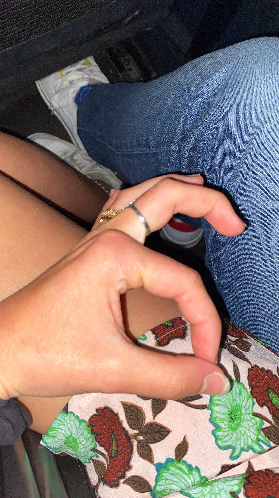
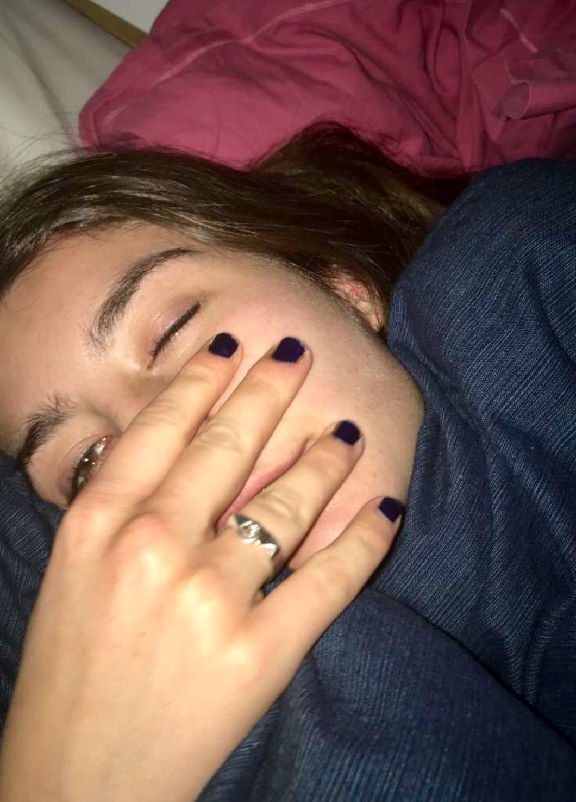
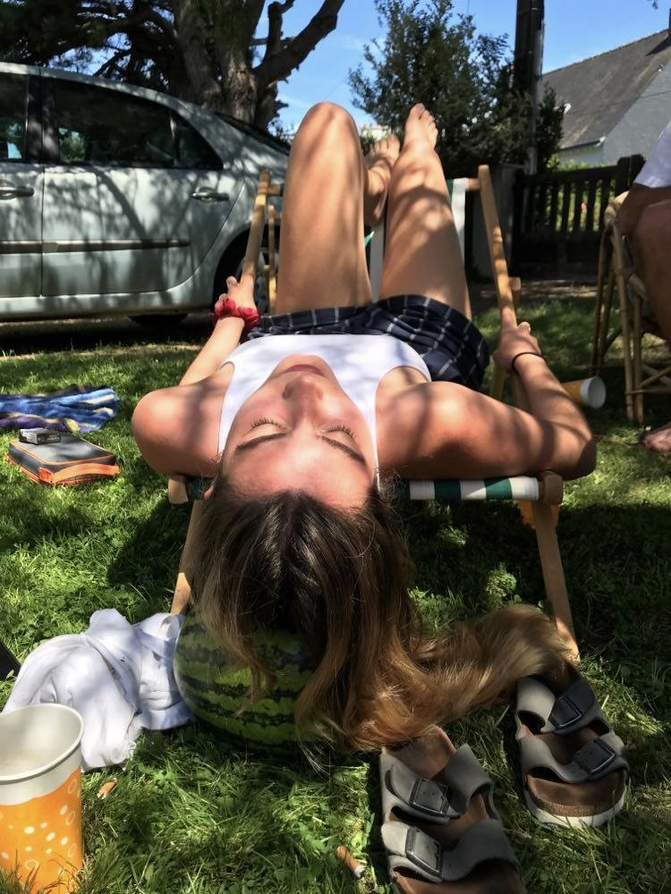
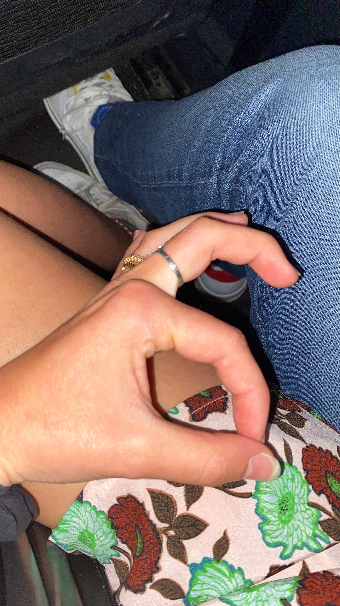
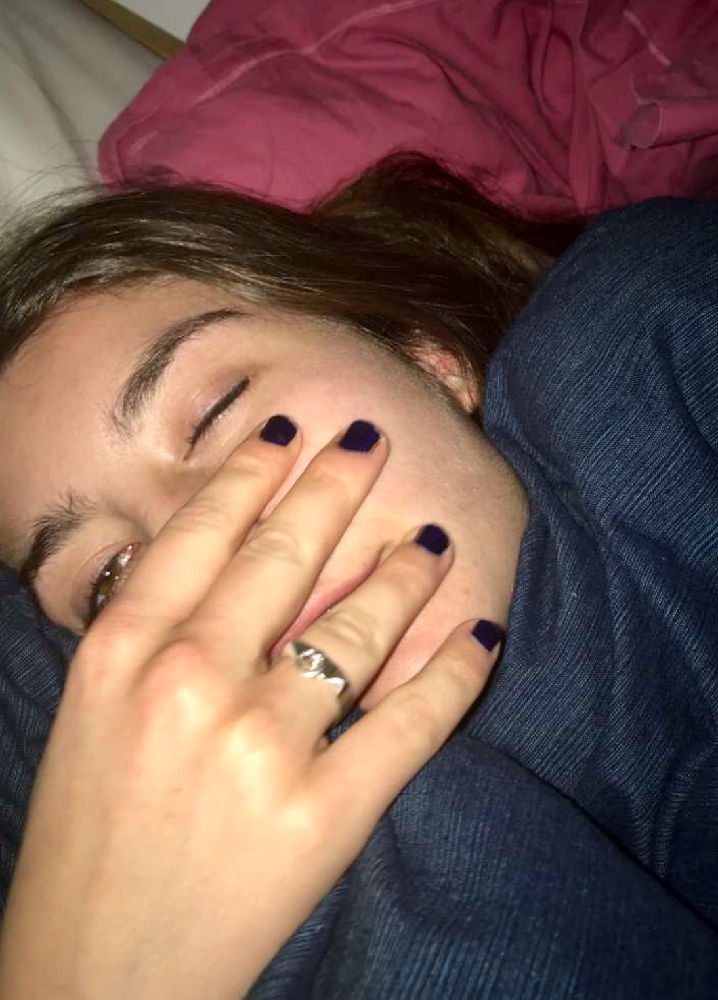
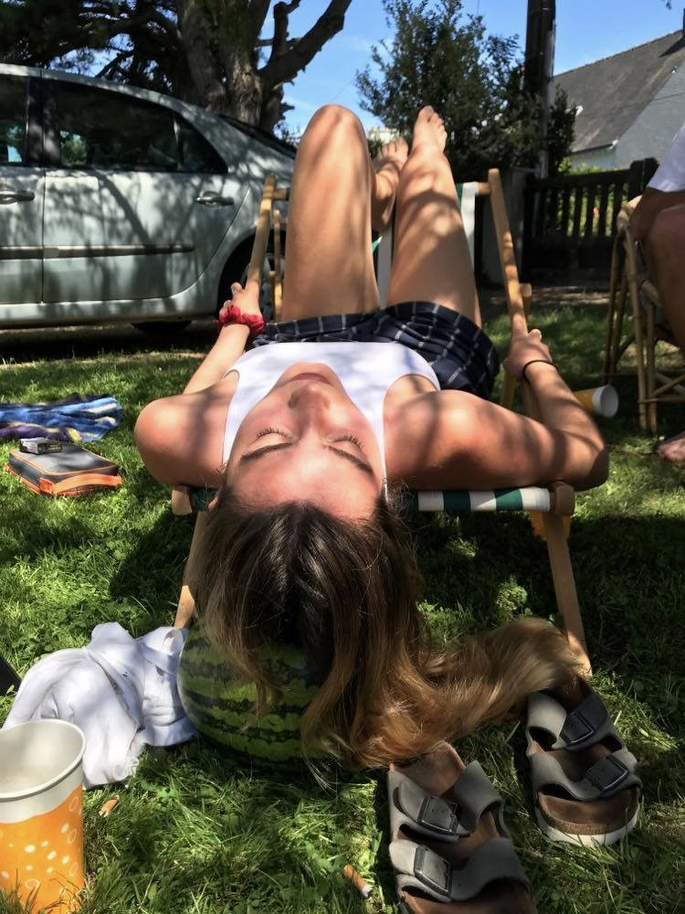

Mes hobbies 🍔
Déguster
L'art culinaire est à la France ce que Britney Spears est à Instagram. Cela s'illustre parfaitement lorsque l'on sait que Camille est une jeune frenchie. Fière de ses origines espagnoles et françaises, ne manquez pas de la retrouver autour de tapas muy tipicos, d'un croque madame en terrasse ou une tomate-mozza en bord de plage.
Prendre congés
Quoi de mieux après un bon repas que...
Spoiler alert : il ne s'agit pas d'une cigarette ou d'un café. Il s'agit bien d'une petite sieste. (On considèrera quand même le combo des trois.)
 





Difficile de bien redémarrer à toute berzingue avec la panse bien remplie, il est indispensable de rendre visite à Morphée.
Brigitte Bardot des temps modernes
Il ne vous aura sûrement pas échapper un détail, Camille a une grande sensibilité avec les animaux. Très à l'aise et toujours en bonne compagnie, elle les considère comme le meilleur ami de la femme.
Service non contractuel, le sujet, phobique, change de trottoir à la vue de cette faune.